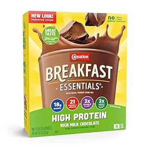

Breakfast Latte

High Protein Trail Breakfast Latte
Quick and easy to make, this is a great drink to make to start the day.
I would whip this up while making high-protein instant oatmeal, and then drink it while hiking.
Ingredients
- One pouch of vanilla Carnation Breakfast Essentials
- One or two (to taste) small packets of instant coffee
- Slightly less than a liter of purified water, in a bottle
Steps
- Ensure there is some room at the top of the water bottle
- Carefully pour the Breakfast Essentials into the water bottle and shake
- Carefully add the coffee and shake
- Enjoy with a high-protein breakfast or after you have started hiking